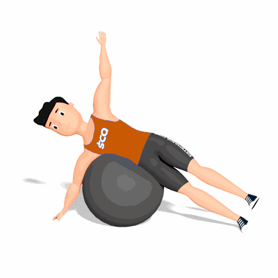

Flexão Lateral de Quadril na Bola Suíça

O exercício auxilia no fortalecimento dos músculos do quadril e trabalha a estabilidade e a flexibilidade do corpo.
Ficha Técnica
Tipo: Funcional
Grupo Muscular: Corpo
Aparelho: Nenhum
Músculos: Nenhum
Como realizar
- Deitado lateralmente sobre a bola, mantenha as pernas com joelhos estendidos e pés um à frente do outro;
- A bola suíça deve estar sob a região pélvica e tronco;
- Mantenha um braço como apoio no solo;
- Inicie o movimento flexionando o quadril e levando a perna a sua frente. Inspire sustentando a posição e expire retornando à posição inicial;
- Conclua todas as repetições para este lado e em seguida repita o exercício deitado lateralmente para o outro lado.
 RC STORE
RC STORE